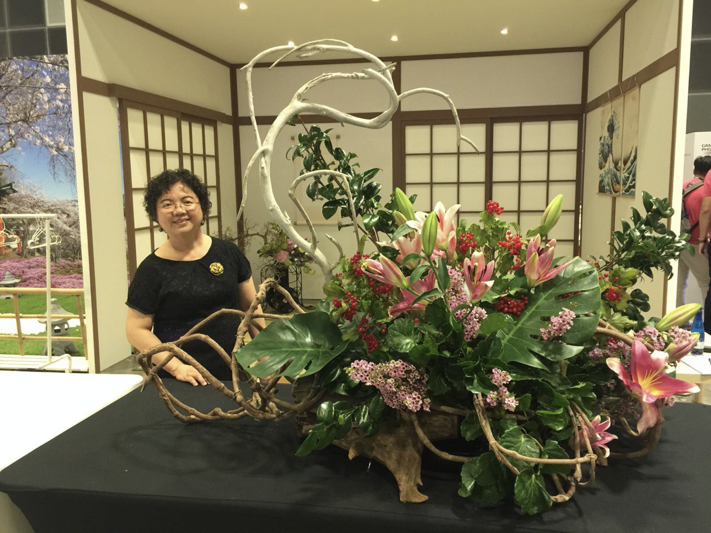

Leehong Chua
Sogetsu School ( 惠苑 | けいえん )
Chief Floral Officer, Floral Horizon

Last Updated 23 Aug 2020
Professional Qualifications
- Mar 2019 - Ikebana, First Jonin Somu (Teacher’s Course) certified by Sogetsu Foundation
- Dec 2017 - Certificate of Completion, Jiang Xi Province Pottery Research Facility
- Jan 1983 - Diploma in Graphic Design, Nanyang Academy of Fine Arts
Awards
- Jul 2018 - Recognition Award, 11th International Floral Designers Society of Singapore (FDSS) Cup Floral Designing Competition held at the Singapore Gardens Festival
- Nov 2017 - Merit, “Designing with Edibles” Competition Table Centerpiece Category
- Nov 2017 - Merit, “Designing with Edibles” Competition Hand Bouquet Category
- Jul 2016, Recognition Award, 10th International FDSS Cup Floral Designing Competition held at the Singapore Gardens Festival
- Jul 2014, Recognition Award, 9th International FDSS Cup Floral Designing Competition held at the Singapore Gardens Festival
Exhibitions
Exhibitions in Singapore
- Jul 2017 - Floral Designers Society of Singapore (FDSS) Dream Ball
- Jul 2018 - 11th International FDSS Cup Floral Designing Competition
- Exhibitions in Japan
- Mar 2019 - Celebration of the 100th Anniversary of the Sogetsu Foundation @ 日本橋髙島屋 (Nihonbashi Takashimiya, in Tokyo, Japan)
Exhibitions in Hong Kong
- Apr 2018 - 14th Asian Regional conference Hosted by Ikebana international Hong Kong Chapter
Exhibitions in Penang, Malaysia
- Sep 2018 - Penang Sogetsu Association 50th Anniversary Charity Dinner